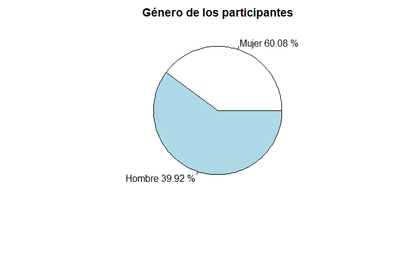
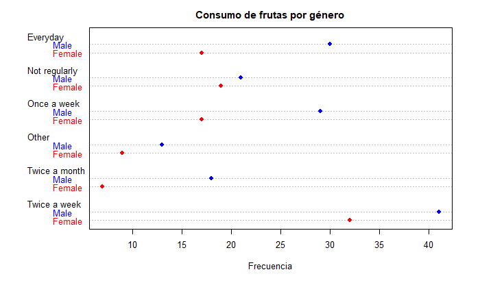

Universitat Oberta de Catalunya
Visualización de Datos
PEC2 – Estudio de técnicas
Author: Maria Angeles Fuentes Exposito
Visualización de Datos
PEC2 – Estudio de técnicas
Author: Maria Angeles Fuentes Exposito
Abril 2023
1- Pie Chart
Herramienta utilizada: Rstudio librería pie
DATASET
“Fruit consumer questionnaire data”
Nº registros: 253
Tipo de datos: factors
Datos categóricos nominales
Author: MORGANLY
Year: 2021
License: Data files © Original Authors
Licencia https://www.kaggle.com/datasets/morganly/fruit-consumer-questionnaire-data?resource=download
2- Dot Matrix chart
Herramienta utilizada: Rstudio librería dotMatrix
DATASET
“Fruit consumer questionnaire data”
Nº registros: 253
Tipo de datos: factors
Datos categóricos nominales
Author: MORGANLY
Year: 2021
License: Data files © Original Authors
Licencia https://www.kaggle.com/datasets/morganly/fruit-consumer-questionnaire-data?resource=download
3- UpSet Visualizing Intersecting Sets
Herramienta utilizada: Rstudio librería UpSetR
DATASET
“Movies”
Nº registros: 3883
Tipo de datos: Char el títuto, int 0 o 1 todas las demas
Datos categóricos
Author: System RStudio
License: RStudio